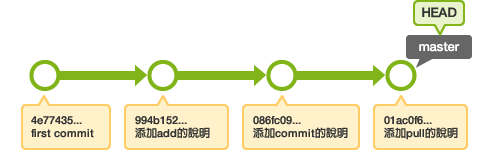
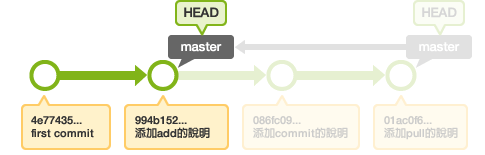

教學3 改寫提交
3. Reset
為了節省時間，我們幫您準備了已經有歷史記錄的本地端數據庫。
從這裡下載
現在讓我們用 reset 命令來刪除 master 分支最前面的兩個提交吧！
進入到下載檔案中的 stepup-tutorial/tutorial3 目錄。本地端的歷史記錄狀態會顯示如下圖。

用 log 命令確認歷史記錄
$ git log
commit 0d4a808c26908cd5fe4b6294a00150342d1a58be
Author: yourname <yourname@yourmail.com>
Date: Mon Jul 16 23:19:26 2012 +0900
添加pull的說明
commit 9a54fd4dd22dbe22dd966581bc78e83f16cee1d7
Author: yourname <yourname@yourmail.com>
Date: Mon Jul 16 23:19:01 2012 +0900
添加commit的說明
commit 326fc9f70d022afdd31b0072dbbae003783d77ed
Author: yourname <yourname@yourmail.com>
Date: Mon Jul 16 23:17:56 2012 +0900
添加add的說明
commit 48eec1ddf73a7fb508ef664efd6b3d873631742f
Author: yourname <yourname@yourmail.com>
Date: Mon Jul 16 23:16:14 2012 +0900
first commit
打開 sample.txt檔案，確認內容。
連猴子都懂的Git命令 add 修改加入索引 commit 記錄索引的狀態 pull 取得遠端數據庫的內容
用 reset 命令刪除提交

$ git reset --hard HEAD~~ HEAD is now at 326fc9f 添加add的說明
打開 sample.txt，查看 "commit 記錄索引的狀態" 和 "pull 取得遠端數據庫的內容" 是否消失。或者使用 log 命令確認歷史記錄。
$ git log
commit 326fc9f70d022afdd31b0072dbbae003783d77ed
Author: yourname <yourname@yourmail.com>
Date: Mon Jul 16 23:17:56 2012 +0900
添加add的說明
commit 48eec1ddf73a7fb508ef664efd6b3d873631742f
Author: yourname <yourname@yourmail.com>
Date: Mon Jul 16 23:16:14 2012 +0900
first commit
在reset之前的提交可以參照ORIG_HEAD。 Reset錯誤的時候，在ORIG_HEAD上reset 就可以還原到reset前的狀態。
$ git reset --hard ORIG_HEAD HEAD is now at 0d4a808 添加pull的說明